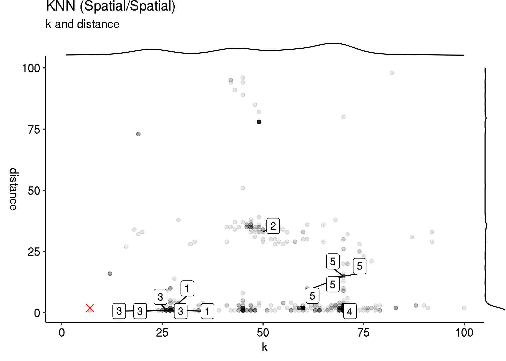
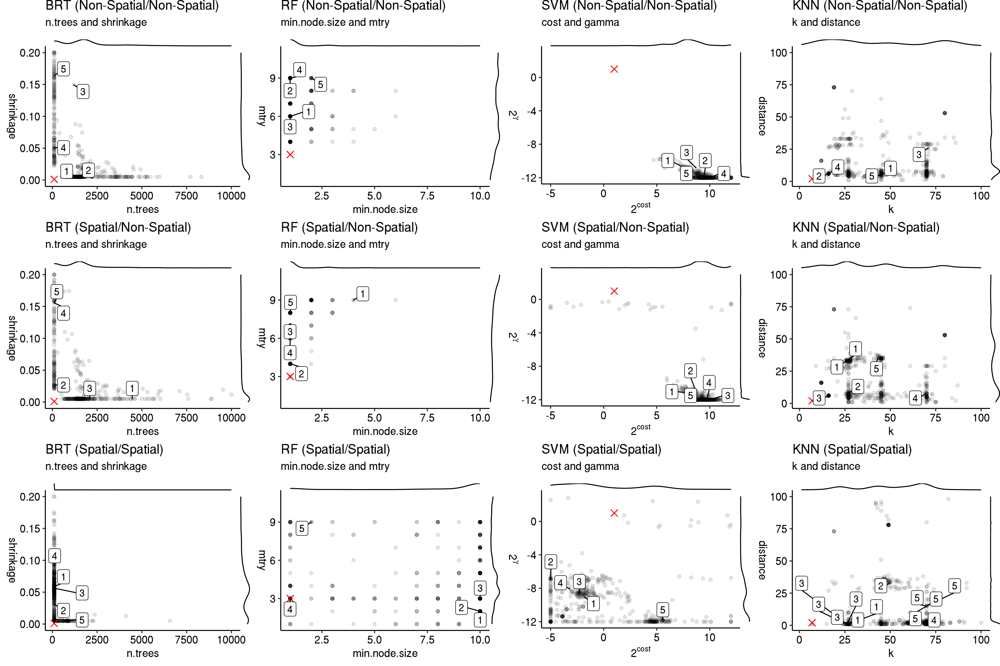

Last updated: 2019-05-25
Checks: 6 0
Knit directory: 2018-model-comparison/
This reproducible R Markdown analysis was created with workflowr (version 1.3.0). The Checks tab describes the reproducibility checks that were applied when the results were created. The Past versions tab lists the development history.
Great! Since the R Markdown file has been committed to the Git repository, you know the exact version of the code that produced these results.
Great job! The global environment was empty. Objects defined in the global environment can affect the analysis in your R Markdown file in unknown ways. For reproduciblity it’s best to always run the code in an empty environment.
The command set.seed(20190523) was run prior to running the code in the R Markdown file. Setting a seed ensures that any results that rely on randomness, e.g. subsampling or permutations, are reproducible.
Great job! Recording the operating system, R version, and package versions is critical for reproducibility.
Nice! There were no cached chunks for this analysis, so you can be confident that you successfully produced the results during this run.
Great! You are using Git for version control. Tracking code development and connecting the code version to the results is critical for reproducibility. The version displayed above was the version of the Git repository at the time these results were generated.
Note that you need to be careful to ensure that all relevant files for the analysis have been committed to Git prior to generating the results (you can use wflow_publish or wflow_git_commit). workflowr only checks the R Markdown file, but you know if there are other scripts or data files that it depends on. Below is the status of the Git repository when the results were generated:
Ignored files:
Ignored: .Rproj.user/
Ignored: .drake/
Ignored: code/07-paper/._files
Ignored: data/
Ignored: log/
Ignored: packrat/lib-R/
Ignored: packrat/lib-ext/
Ignored: packrat/lib/
Ignored: rosm.cache/
Ignored: tests/testthat/
Untracked files:
Untracked: packrat/src/here/
Unstaged changes:
Modified: _drake.R
Modified: code/07-paper/submission/3/latex-source-files/cv_boxplots_final_brier-1.pdf
Deleted: docs/figure/vis-tuning-effects.Rmd/tuning_effects_all_models_mbo-1.pdf
Modified: inst/rsync-jupiter.sh
Modified: packrat/packrat.lock
Note that any generated files, e.g. HTML, png, CSS, etc., are not included in this status report because it is ok for generated content to have uncommitted changes.
These are the previous versions of the R Markdown and HTML files. If you’ve configured a remote Git repository (see ?wflow_git_remote), click on the hyperlinks in the table below to view them.
| File | Version | Author | Date | Message |
|---|---|---|---|---|
| Rmd | dac5d6a | pat-s | 2019-05-25 | upd reports |
| html | 137adf4 | pat-s | 2019-05-25 | Build site. |
| Rmd | 30dd3ca | pat-s | 2019-05-25 | wflow_publish(knitr_in(“analysis/vis-tuning-effects.Rmd”), view = |
| Rmd | 6af4181 | pat-s | 2019-05-23 | update reports |
| Rmd | 769718b | pat-s | 2019-05-23 | Start workflowr project. |
Hyperparameter tuning results are plotted in a 2D space. Each dot represents the optimal setting for a specific fold during cross-validation. The red cross denotes the default setting for the respective hyperparameter combination of the algorithm.
The numbers 1-5 show the selected settings for the first five folds of the cross-valdiation (= the first repetition).
Here something seems to have gone wrong - when looking at the optimization path results of this combination, only around 25 of 100 MBO iterations completed successfully.

| Version | Author | Date |
|---|---|---|
| 137adf4 | pat-s | 2019-05-25 |

| Version | Author | Date |
|---|---|---|
| 137adf4 | pat-s | 2019-05-25 |
R version 3.5.1 (2018-07-02)
Platform: x86_64-pc-linux-gnu (64-bit)
Running under: CentOS Linux 7 (Core)
Matrix products: default
BLAS/LAPACK: /opt/spack/opt/spack/linux-centos7-x86_64/gcc-7.3.0/openblas-0.3.5-zncvk4jccaqyfl4z3vszaboeps6hyzta/lib/libopenblas_zen-r0.3.5.so
locale:
[1] LC_CTYPE=en_GB.UTF-8 LC_NUMERIC=C
[3] LC_TIME=en_GB.UTF-8 LC_COLLATE=en_GB.UTF-8
[5] LC_MONETARY=en_GB.UTF-8 LC_MESSAGES=en_GB.UTF-8
[7] LC_PAPER=en_GB.UTF-8 LC_NAME=C
[9] LC_ADDRESS=C LC_TELEPHONE=C
[11] LC_MEASUREMENT=en_GB.UTF-8 LC_IDENTIFICATION=C
attached base packages:
[1] stats graphics grDevices utils datasets methods base
other attached packages:
[1] tidyselect_0.2.5 workflowr_1.3.0 here_0.1
[4] kableExtra_1.1.0 ggExtra_0.8 ggrepel_0.8.0
[7] reporttools_1.1.2 xtable_1.8-3 cowplot_0.9.3
[10] hrbrthemes_0.6.0 ggpubr_0.2 future.callr_0.4.0
[13] furrr_0.1.0.9002 future_1.11.1.1 ggsci_2.9
[16] clustermq_0.8.6 ggspatial_1.0.3 ggplot2_3.0.0
[19] rgenoud_5.8-3.0 fs_1.2.6 curl_3.2
[22] R.utils_2.7.0 R.oo_1.22.0 R.methodsS3_1.7.1
[25] GSIF_0.5-5 stringr_1.3.1 RSAGA_1.3.0
[28] plyr_1.8.4 shapefiles_0.7 foreign_0.8-71
[31] gstat_1.1-6 glue_1.3.0 rasterVis_0.45
[34] latticeExtra_0.6-28 RColorBrewer_1.1-2 lattice_0.20-35
[37] raster_2.8-19 viridis_0.5.1 viridisLite_0.3.0
[40] rgdal_1.4-3 sp_1.3-1 tibble_2.0.1
[43] forcats_0.3.0 lwgeom_0.1-6 dplyr_0.8.0.1
[46] sf_0.7-4 parallelMap_1.3 purrr_0.2.5
[49] mlrMBO_1.1.2 smoof_1.5.1 checkmate_1.8.5
[52] BBmisc_1.11 magrittr_1.5 mlr_2.13.9000
[55] ParamHelpers_1.11 drake_7.2.0
loaded via a namespace (and not attached):
[1] backports_1.1.2 Hmisc_4.2-0 fastmatch_1.1-0
[4] igraph_1.2.2 lazyeval_0.2.1 splines_3.5.1
[7] storr_1.2.1 listenv_0.7.0 digest_0.6.15
[10] htmltools_0.3.6 base64url_1.4 cluster_2.0.7-1
[13] readr_1.3.1 globals_0.12.4 extrafont_0.17
[16] xts_0.11-0 extrafontdb_1.0 colorspace_1.3-2
[19] rvest_0.3.2 pixmap_0.4-11 xfun_0.7
[22] DiceKriging_1.5.6 callr_3.1.0 crayon_1.3.4
[25] jsonlite_1.5 hexbin_1.27.2 survival_2.42-3
[28] zoo_1.8-3 gtable_0.2.0 webshot_0.5.1
[31] Rttf2pt1_1.3.7 scales_1.0.0 DBI_1.0.0
[34] miniUI_0.1.1.1 Rcpp_1.0.0 plotrix_3.7-4
[37] spData_0.2.9.0 htmlTable_1.12 units_0.6-2
[40] Formula_1.2-3 intervals_0.15.1 dismo_1.1-4
[43] htmlwidgets_1.3 httr_1.3.1 FNN_1.1
[46] aqp_1.17 acepack_1.4.1 pkgconfig_2.0.2
[49] reshape_0.8.8 XML_3.98-1.16 nnet_7.3-12
[52] RJSONIO_1.3-1.1 labeling_0.3 later_0.7.5
[55] rlang_0.3.1 munsell_0.5.0 tools_3.5.1
[58] evaluate_0.13 yaml_2.2.0 processx_3.2.1
[61] knitr_1.23 mime_0.5 whisker_0.3-2
[64] xml2_1.2.0 compiler_3.5.1 rstudioapi_0.10
[67] plotly_4.8.0 e1071_1.7-0 spacetime_1.2-2
[70] lhs_0.16 stringi_1.2.4 ps_1.2.1
[73] gdtools_0.1.7 plot3D_1.1.1 Matrix_1.2-14
[76] classInt_0.2-3 pillar_1.3.1 plotKML_0.5-9
[79] data.table_1.11.8 httpuv_1.4.5 colorRamps_2.3
[82] R6_2.2.2 promises_1.0.1 gridExtra_2.3
[85] codetools_0.2-15 MASS_7.3-50 assertthat_0.2.0
[88] rprojroot_1.3-2 withr_2.1.2 hms_0.4.2
[91] parallel_3.5.1 grid_3.5.1 rpart_4.1-13
[94] tidyr_0.8.2 class_7.3-14 rmarkdown_1.12
[97] misc3d_0.8-4 mco_1.0-15.1 git2r_0.23.0
[100] shiny_1.2.0 base64enc_0.1-3